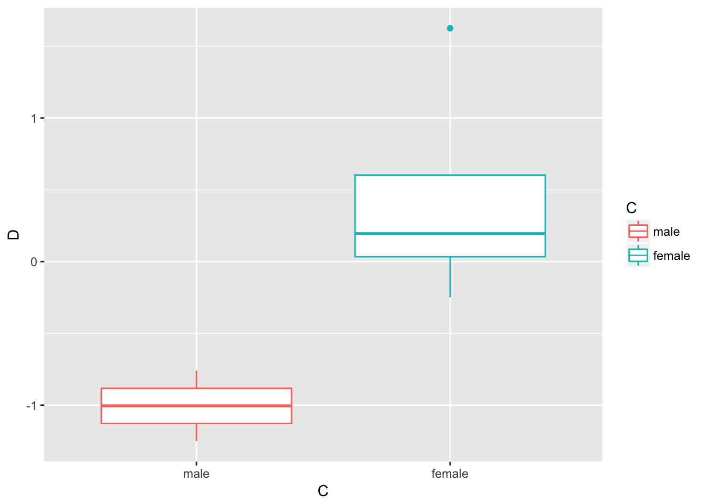
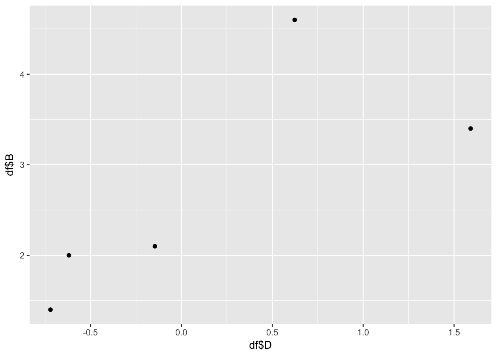
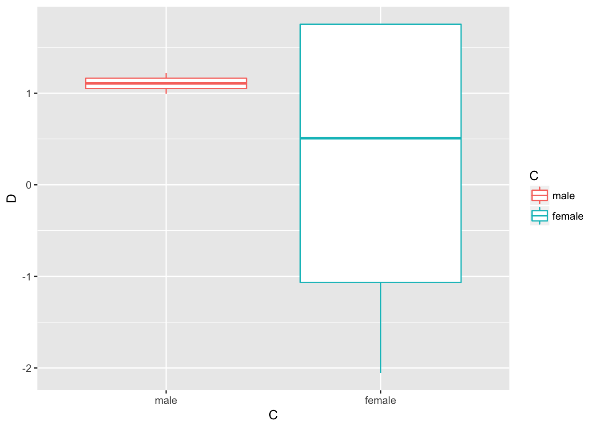
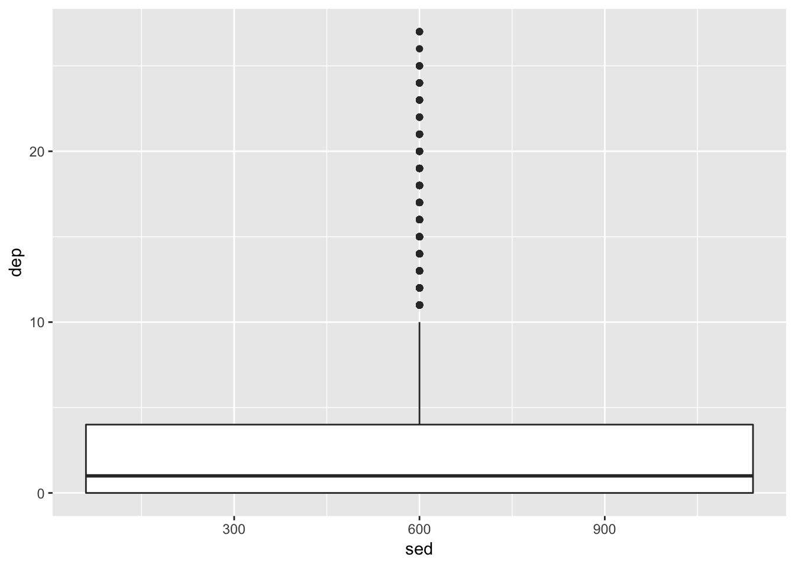
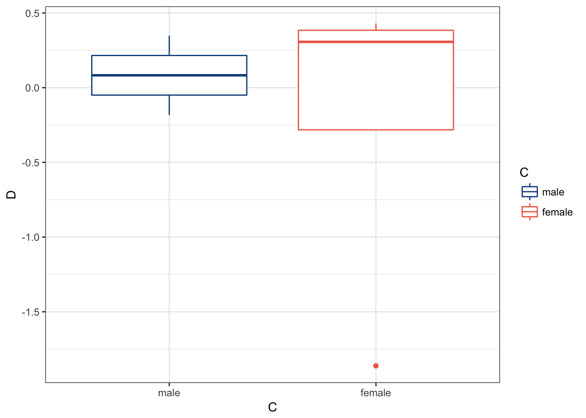
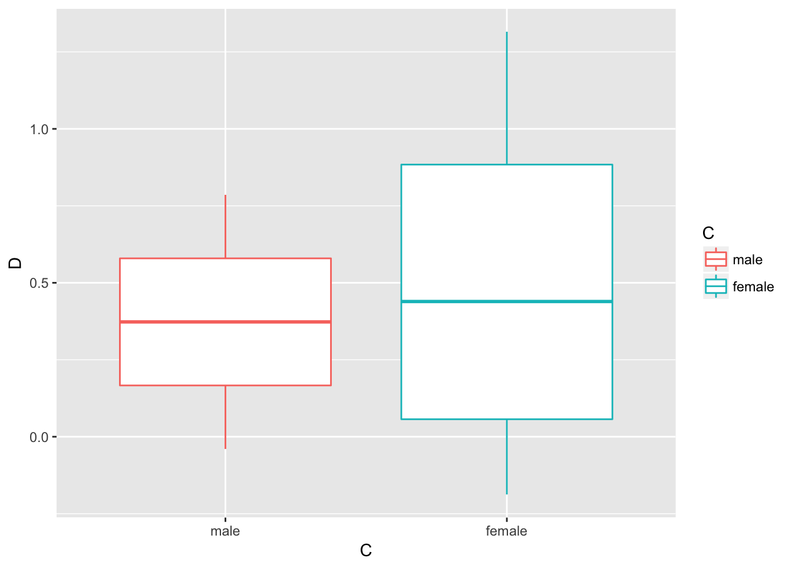

Chapter 3: Understanding and Describing Your Data
“If you can’t explain it simply, you don’t understand it well enough.” — Albert Einstein
We are going to take what we’ve learned from the previous two chapters and use them together to have simple but powerful ways to understand your data. This chapter will be split into two sections:
- Descriptive Statistics
- Visualizations
The two go hand-in-hand in understanding what is happening in your data before you attempt any modeling procedures. We are often most interested in three things when exploring our data: understanding distributions, understanding relationships, and looking for outliers or errors.
Descriptive Statistics
Several methods of discovering descriptives in a succinct way have been developed for R. My favorite (full disclosure: it is one that I made so I may be biased) is the table1 function in the furniture package.
This function has been designed to be simple and complete. It produces a well-formatted table that you can easily export and use as a table in a report or article.14 We’ll use the df object we created in Chapter 2.
Let’s get descriptive statistics for five of the variables: asthma, race, depression, family size, and sedentary behavior.
#library(furniture)
df %>%
table1(asthma, race, dep, famsize, sed)##
## ──────────────────────────────────────
## Mean/Count (SD/%)
## n = 4437
## asthma
## No Asthma 3774 (85.1%)
## Asthma 663 (14.9%)
## race
## MexicanAmerican 392 (8.8%)
## OtherHispanic 442 (10%)
## White 1733 (39.1%)
## Black 1161 (26.2%)
## Other 709 (16%)
## dep
## 3.2 (4.5)
## famsize
## 2.7 (1.5)
## sed
## 369.3 (201.2)
## ──────────────────────────────────────This quickly gives you means and standard deviations or counts and percentages.
The code below shows the means/standard devaitions or counts/percentages by a grouping variable—in this case, C.
df %>%
group_by(asthma) %>%
table1(race, dep, famsize, sed)##
## ────────────────────────────────────────────────
## asthma
## No Asthma Asthma
## n = 3774 n = 663
## race
## MexicanAmerican 350 (9.3%) 42 (6.3%)
## OtherHispanic 380 (10.1%) 62 (9.4%)
## White 1453 (38.5%) 280 (42.2%)
## Black 958 (25.4%) 203 (30.6%)
## Other 633 (16.8%) 76 (11.5%)
## dep
## 3.0 (4.3) 4.4 (5.2)
## famsize
## 2.7 (1.5) 2.6 (1.5)
## sed
## 365.2 (201.1) 392.4 (200.0)
## ────────────────────────────────────────────────We can also test for differences by group as well.
df %>%
group_by(asthma) %>%
table1(race, dep, famsize, sed,
test = TRUE)##
## ────────────────────────────────────────────────────────
## asthma
## No Asthma Asthma P-Value
## n = 3774 n = 663
## race <.001
## MexicanAmerican 350 (9.3%) 42 (6.3%)
## OtherHispanic 380 (10.1%) 62 (9.4%)
## White 1453 (38.5%) 280 (42.2%)
## Black 958 (25.4%) 203 (30.6%)
## Other 633 (16.8%) 76 (11.5%)
## dep <.001
## 3.0 (4.3) 4.4 (5.2)
## famsize 0.496
## 2.7 (1.5) 2.6 (1.5)
## sed 0.001
## 365.2 (201.1) 392.4 (200.0)
## ────────────────────────────────────────────────────────Several other options exist for you to play around with, including obtaining medians and ranges and removing a lot of the white space of the table.
With three or four short lines of code we can get a good idea about variables that may be related to the grouping variable and any missingness in the factor variables. There’s much more you can do with table1 and there are vignettes and tutorials available to learn more.15
Other quick descriptive functions exist; here are a few of them.
## install with install.packages("psych")
psych::describe(df) ## install with install.packages("Hmisc")
Hmisc::describe(df) ## install with install.packages("janitor")
janitor::tabyl(df)There is truly no shortage of descriptive information that you can obtain within R.
Visualizations
Understanding your data, in my experience, almost always requires visualizations16. If we are going to use a model of some sort, understanding the distributions and relationships beforehand are very helpful in interpreting the model and catching errors in the data. Also finding any outliers or errors that could be highly influencing the modeling should be understood beforehand.
For simple but appealing visualizations we are going to be using ggplot2. This package is used to produce professional level plots for many journalism organizations (e.g. five-thrity-eight). These plots are quickly presentation quality and can be used to impress your boss, your advisor, or your friends.
Using ggplot2
This package is included in the tidyverse and is built on the “Grammar of Graphics” principles of data visualization. In essence, it is built on adding layers to a plot. Below, we walk through quick ways to start to visualize our data.
First, we have a nice qplot function that is short for “quick plot.” It quickly decides what kind of plot is useful given the data and variables you provide.
qplot(df$sed) ## Makes a simple histogram## `stat_bin()` using `bins = 30`. Pick better value with `binwidth`.## Warning: Removed 18 rows containing non-finite values (stat_bin).
qplot(df$sed, df$dep) ## Makes a scatterplot## Warning: Removed 18 rows containing missing values (geom_point).
For a bit more control over the plot, you can use the ggplot function. The first piece is the ggplot piece. From there, we add layers. These layers generally start with geom_ then have the type of plot. Below, we start with telling ggplot the basics of the plot and then build a boxplot.
The key pieces of ggplot:
aes()is how we tellggplot()to look at the variables in the data frame.- Within
aes()we told it that the x-axis is the variable “C” and the y-axis is the variable “D” and then we color it by variable “C” as well (which we told specifically to the boxplot). geom_functions are how we tellggplotwhat to plot—in this case, a boxplot.
These same pieces will be found throughout ggplot plotting. In later chapters we will introduce much more in relation to these plots.
ggplot(df, aes(x=sed, y=dep)) +
geom_boxplot(aes(color = sed))## Warning: Continuous x aesthetic -- did you forget aes(group=...)?## Warning: Removed 18 rows containing missing values (stat_boxplot).
Here’s a few more examples:
ggplot(df, aes(x=sed)) +
geom_bar(stat="count")## Warning: Removed 18 rows containing non-finite values (stat_count).
ggplot(df, aes(x=sed, y=dep)) +
geom_point(aes(color = famsize))## Warning: Removed 18 rows containing missing values (geom_point).
Note that the warning that says it removed a row is because we had missing values in in these variables.
ggplot(df, aes(x=sed,
y=dep,
group = race,
color = race)) +
geom_point() +
geom_smooth(method = "lm")## Warning: Removed 18 rows containing non-finite values (stat_smooth).## Warning: Removed 18 rows containing missing values (geom_point).
We are going to make the first one again but with some aesthetic adjustments. Notice that we just added two extra lines telling ggplot2 how we want some things to look.17
ggplot(df, aes(x=famsize, y=dep, group = famsize)) +
geom_boxplot(aes(color = riagendr)) +
theme_bw() +
scale_color_manual(values = c("dodgerblue4", "coral2"))## Warning: Removed 178 rows containing missing values (stat_boxplot).
The theme_bw() makes the background white, the scale_color_manual() allows us to change the colors in the plot. You can get a good idea of how many types of plots you can do by going to http://docs.ggplot2.org/current. Almost any informative plot that you need to do as a researcher is possible with ggplot2.
We will be using ggplot2 extensively in the book to help understand our data and our models as well as communicate our results.
Apply It
This link contains a folder complete with an Rstudio project file, an RMarkdown file, and a few data files. Download it and unzip it to do the following steps.
Step 1
Open the Chapter3.Rproj file. This will open up RStudio for you.
Step 2
Once RStudio has started, in the panel on the lower-right, there is a Files tab. Click on that to see the project folder. You should see the data files and the Chapter3.Rmd file. Click on the Chapter3.Rmd file to open it. In this file, import the data, create a descriptive table with table1() and three different types of visualizations (e.g., boxplot, histogram, scatterplot).
Once that code is in the file, click the knit button. This will create an HTML file with the code and output knitted together into one nice document. This can be read into any browser and can be used to show your work in a clean document.
It is called “table1” because a nice descriptive table is often found in the first table of many academic papers.↩
If you’d like to learn more about data visualization, see Kieran Healy’s Data Visualization: A Practical Introduction at http://socviz.co.↩
This is just scratching the surface of what we can change in the plots.↩